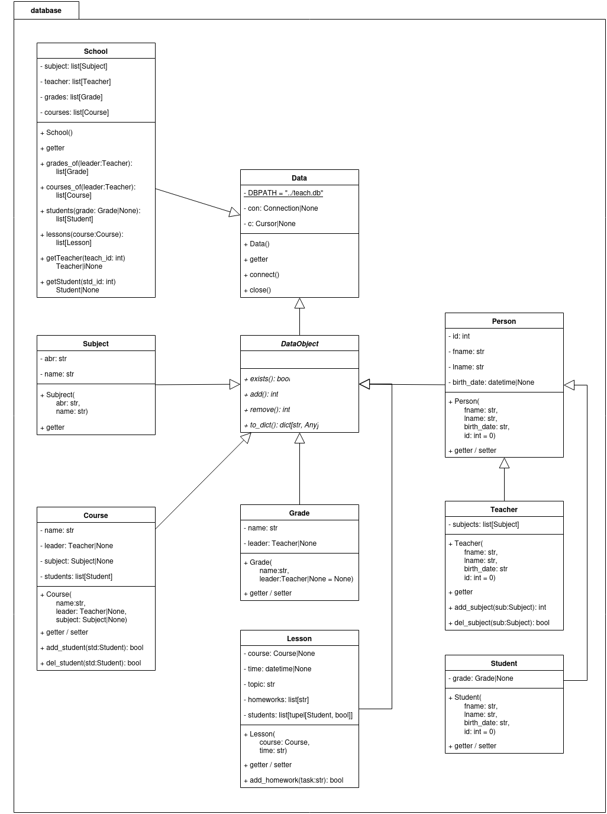

Paket: database
- database.indb()
Initialisiert die Datenbank.
Wichtig
Die gasamte Datenbank wird dabei durch eine neue ersetzt. Diese Funktion wird auch in Pytests verwendet. Sobald reale Daten existieren, sollten keine Pytests mehr durchgführt werden.
UML-Klassendiagramm
Modul: data
- class database.Data
Stellt eine Datenbankverbindung zur Verfügung.
- property c: Cursor | None
Verwaltet den Datenbankzeiger.
- Getter:
Verweist auf den Datenbankzeiger
- Rückgabe:
None, wenn dieser noch nicht gesetzt ist
- close()
Trennt die Datenbankverbindung wieder.
- Rückgabetyp:
None
- property con: Connection | None
Verwaltet die Datenbankverbindung.
- Getter:
Stellt die Databankverbindung bereit
- Rückgabe:
None, wenn keine Verbindung beteht
- connect()
Stellt eine Verbindung zur Datenbank her.
- Rückgabetyp:
None
- class database.DataObject
Repräsentiert eine Datenbankentität.
- abstractmethod add()
Fügt ein neues Objekt zur Datenbank hinzu.
- Rückgabetyp:
int- Rückgabe:
- 0 - erfolgreich1 - Daten sind nicht Validiert oder nicht im gültigen Format2 - Beziehende Referenzen sind nicht vorhanden3 - Objekt existiert bereits4 - Datenbankfehler
- abstractmethod exists()
Prüft, ob das aktuelle Objekt exitiert.
- Rückgabetyp:
bool- Rückgabe:
True, wenn das Objekt bereits vorhanden ist
- abstractmethod remove()
Löscht das akuelle Objekt aus der Datenbank.
- Rückgabetyp:
int- Rückgabe:
- 0 - erfolgreich1 - Objekt ist nicht Vorhanden2 - Objekt kann nicht gelöscht werden, da noch Referenzen vorhanden sind3 - Datenbankfehler
- abstractmethod to_dict()
Liefert die Attibute des Objektes für das Frontend.
- Rückgabetyp:
dict[str,Any]- Rückgabe:
Daten als Wörterbuch
Modul: subject
- class database.Subject(abr, name='')
Repräsentiert ein Unterichtsfach.
- Parameter:
abr (
str) – Abkürzung in der Datenbank (3 Buchstaben)name (
str) – Langbezeichnung (muss mit Großbuchstaben beginnen)
- property abr: str
- Getter:
Liefert die Abkürzung in der Datenbank
- add()
Fügt ein neues Fach zur Datenbank hinzu.
- Rückgabetyp:
int- Rückgabe:
- 0 - erfolgreich1 - Ungrültige Daten3 - Fach bereits vorhanden
- exists()
Prüft, ob das Unterrichtfach bereits existiert.
- Rückgabetyp:
bool- Rückgabe:
True, wenn das Fach bereits vorhanden ist
- property name: str
- Getter:
Liefert die Langbezeichnung des Faches
- remove()
Löscht das akuelle Objekt aus der Datenbank.
- Rückgabetyp:
int- Rückgabe:
- 0 - erfolgreich1 - Objekt ist nicht Vorhanden2 - Objekt kann nicht gelöscht werden, da noch Referenzen vorhanden sind3 - Datenbankfehler
- to_dict()
Liefert die Attibute des Objektes für das Frontend.
- Rückgabetyp:
dict[str,str]- Rückgabe:
Daten als Wörterbuch
Modul: person
- class database.Person(fname, lname, birth_date, id=0)
Repräsentiert eine Person.
- Parameter:
fname (
str) – Vorname der Personlname (
str) – Nachname der Personbirth_date (
str) – Geburtdatum (JJJJ-MM-TT)id (
int) – ID der Person (Standard: 0)
- property birth_date: datetime | None
- Getter:
Liefert das Geburtsdatum der Person
- Rückgabe:
Geburtdatum als datetime-Objekt, None, wenn im Konstruktor das Geburtdatum nicht im korrekten Format angegeben wurde
- property db_birth: str
- Getter:
Liefert das Geburtdatum einer Person
- Rückgabe:
Geburtdatum (JJJJ-MM-TT) einer Person
- property fname: str
- Getter:
Liefert den Vornamen der Person
- property id: int
Verwaltet die Personen-ID.
- Getter:
Gibt den gespeicherten Wert der ID zurück
- Setter:
Setzt die ID wenn diese bei Erstellung noch nicht bekannt war und in der Datenbank gesucht worden ist
- property lname: str
Verwaltet den Familiennamen einer Person
- Getter:
Liefert den Familienname
- Setter:
Ändert den Familienname
- to_dict()
Liefet die Daten einer Person zur Verarbeitung im Frontend.
- Rückgabetyp:
dict[str,str|int]- Rückgabe:
Personendaten
Modul: teacher
- class database.Teacher(fname, lname, birth_date, id=0)
Repräsentiert einen Lehrer.
- Parameter:
fname (
str) – Vorname des Lehrerslname (
str) – Nachnmame des Leherersbrith_date – Geburtsdatum (JJJJ-MM-TT) des Lehrers
id (
int) – ID des Lehrers (Standard: 0)
- add()
Fügt einen Lehrer zur Datenbank hinzu.
- Rückgabetyp:
int- Rückgabe:
- 0 - Erfolgreich1 - Daten ungültig3 - Lehrer bereits vorhanden
- add_subject(sub)
Fügt dem Lehrer ein neues Fach hinzu.
- Parameter:
sub (
Subject) – zu hinzufügendes Fach- Rückgabetyp:
int- Rückgabe:
- 0 - Erfolreich1 - Fach nicht gefunden2 - Fach bereits vorhanden
- exists()
Prüft, ob ein Lehrer bereits vorhanden ist.
- Rückgabetyp:
bool- Rückgabe:
True, wenn der Lehrer bereits vorhanden ist
- remove()
Löscht das akuelle Objekt aus der Datenbank.
- Rückgabetyp:
int- Rückgabe:
- 0 - erfolgreich1 - Objekt ist nicht Vorhanden2 - Objekt kann nicht gelöscht werden, da noch Referenzen vorhanden sind3 - Datenbankfehler
Modul: student
- class database.Student(fname, lname, birth_date, id=0)
Repräsentiert einen Schüler.
- Parameter:
fname (
str) – Vorname des Schülerslname (
str) – Nachname des Schülersbirth_date (
str) – Geburtsdatum (JJJJ-MM-TT) des Schülersid (
int) – ID des Schülers (Standard: 0)
- Variablen:
grade – Instaz der zugeörigen Klasse (Standard: None)
- add()
Fügt einen neuen Schüler in die Datenbank ein.
- Rückgabetyp:
int- Rückgabe:
- 0 - Erfolgreich1 - Ungültige Daten3 - Schüler bereits vorhanden
- exists()
Prüft, ob ein Schüler bereits existiert.
- Rückgabetyp:
bool- Rückgabe:
True, wenn der Schüler bereits vorhanden ist
- property grade: Grade | None
Verwaltet die Klasse des Schülers.
- Getter:
Liefert die Klasse
- Setter:
Legt die Klasse fest
- Rückgabe:
None, wenn dem Schüler keine Klasse zugewiesen ist
- remove()
Löscht das akuelle Objekt aus der Datenbank.
- Rückgabetyp:
int- Rückgabe:
- 0 - erfolgreich1 - Objekt ist nicht Vorhanden2 - Objekt kann nicht gelöscht werden, da noch Referenzen vorhanden sind3 - Datenbankfehler
Modul: grade
- class database.Grade(name, leader=None)
Repräsentiert eine Schulklasse.
- Parameter:
name (
str) – Name der Klasseleader (
Teacher|None) – Lehrer-Instanz, des Klassenleiters (Standard: None)
Bemerkung
Es ist zu emphehlen, dass bei jährlich wechselden Klassennamen die Klassenstufen unter 10 mit einer führenden 0 z. B. 09a zu beginnen, da eine alphabetische Soritierung bei Klassenlisten vorgenommen wird.
- add()
Legt eine neue Klasse an.
- Rückgabetyp:
int- Rückgabe:
- 0 - Erfolgreich2 - Der Klassenleiter existiert nicht3 - Klasse bereits vorhanden
- exists()
Prüft, ob eine Klasse existiert.
- Rückgabetyp:
bool- Rückgabe:
True, wenn die Klasse bereits existiert
- property leader: Teacher | None
Verwaltet den Klassenleiter.
- Getter:
Liefert den Klassenleiter
- Setter:
Legt den Klassenleiter fest
- property name: str
Verwaltet den Klassennamen.
- Getter:
Liefert den Namen der Klasse
- Setter:
Ändert den Klassennamen
- remove()
Löscht eine Schulklasse.
- Rückgabetyp:
int- Rückgabe:
- 0 - Erfolgreich1 - Klasse nicht vorhanden
- to_dict()
Liefert die Klassendaten an das Frontend.
- Rückgabetyp:
dict[str,str]- Rückgabe:
Klassenname als Wörterbuch
Modul: course
- class database.Course(name, leader=None, subject=None)
Respäsentiert einen Kurs.
- Parameter:
- Variablen:
students – Mitgliederlieste
- add()
Fügt einen neuen Kurs in die Datenbank ein.
- Rückgabetyp:
int- Rückgabe:
- 0 - Erfolgreich2 - Leiter oder Fach existieren nicht3 - Kurs ist bereits vorhanden
- add_student(std)
Fügt einen Schüler zur Datenbank hinzu.
- Parameter:
std (
Student) – zu hinzufügender Schüler- Rückgabetyp:
int- Rückgabe:
- 0 - Erfolgreich1 - Übertragenes Objekt ist kein Schüler2 - Schüler ist nicht vorhanden3 - Schüler ist bereits in dem Kurs eingetragen
- exists()
Prüft, ob der Kurs bereits vorhanden ist.
- Rückgabetyp:
bool- Rückgabe:
True, wenn der Kurs bereits vorhanden ist
- property leader: Teacher | None
Verwaltet den Kursleiter.
- Getter:
Liefert den Kursleiter
- Setter:
Wechselt den Kursleiter
- property name: str
- Getter:
Liefet den Namen des Kurses
- remove()
Löscht einen Kurs.
- Rückgabetyp:
int- Rückgabe:
- 0 - Erfolgreich1 - Kurs nicht vorhanden
- to_dict()
Liefert die Kerndaten eines Kurses.
- Rückgabetyp:
dict[str,Any]- Rückgabe:
Wörterbuch des Kurses
Modul: lesson
- class database.Lesson(course, time, topic='')
Repräsentiert eine Unterrichstunde.
- Parameter:
course (
Course) – Zugehöriger Kurstime (
str) – Geplanter Unterrichtsbeginn (JJJJ-TT-MM HH:MM)topic (
str) – Thema der Stunde (Standard: „“)
- add()
Fügt eine Unterrichtstunde zur Datenbank hinzu.
- Rückgabetyp:
int- Rückgabe:
- 0 - Erfolgreich1 - Zeitformat ungültig2 - Kurs nicht vorhanden3 - Stunde bereits vorhanden
- add_homework(task)
Legt eine neue Hausaufabe an.
- Parameter:
task (
str) – Zu erlegigende Aufgabe- Rückgabetyp:
int- Rückgabe:
- 0 - Erfolgreich1 - Stunde wurde nicht gefunden2 - Hausaufgabe bereits eingetragen
- property db_time: str
- Getter:
Liefert die Datenbankzeit der Stunde
- Rückgabe:
Zeit (JJJJ-MM-TT HH:MM)
- exists()
Prüft, ob eine Stunde bereits vorhanden ist.
- Rückgabetyp:
bool- Rückgabe:
True, wenn die Stunde vorhanden ist
- property homeworks: list[str]
- Getter:
Liefert ale zu der Stunde aufgetragenen Hausaufgaben
- remove()
Löscht eine Stunde.
- Rückgabetyp:
int- Rückgabe:
- 0 - Erfolgreich1 - Stunde nicht vorhanden
- set_present_status(presents)
Spreichert die zutreffenden Anwesenheitsstati ab.
- Parameter:
presents (
list[bool]) – Liste mit Anwesenheitsstati (True = anwesend) in identischer Reihenfolge der Liste der Kursteilnehmer- Rückgabetyp:
int- Rückgabe:
- 0 - Erfolgreich1 - Übermittelte Liste ist nicht korekt2 - Stunde wurde nicht gefunden
- property students: list[tuple[Student, bool]]
- Getter:
Liefert eine Liste der Studenten und dem Anwensenheitsstatus
- Rückgabe:
Eine Liste aus Tupeln mit der Instanz des Schülers und einem boolischen Wert (True = anwesend)
- property time: datetime | None
Verwaltet den Unterrichtsbeginn.
- Getter:
Liefert den Unterrichtsbeginn
- Setter:
Ändert den Unterrichtsbeginn (JJJJ-MM-TT HH:MM)
- Rückgabe:
datetime-Objekt des Unterrichtsbegins
- to_dict()
Liefert die Kerndaten einer Stunde für weiter Anfragen
- Rückgabetyp:
dict[str,str]- Rückgabe:
Wörterbuch der Stunde
- property topic: str
Vervaltet das Thema der Stunde.
- Getter:
Liefert das Thema
- Setter:
Legt des Thema fest
Modul: school
- class database.School
Dient zur Verwaltung von Daten.
- property courses: list[Course]
- Getter:
Liefert eine Liste von allen in der Schule angebotenen Kursen
- courses_of(leader)
Liefet eine Liste von Kursen eines Lehrers.
- getStudent(id)
Sucht einen Schüler anhand der ID.
- Parameter:
id (
int) – ID des Schülers- Rückgabetyp:
Student|None- Rückgabe:
Instanz des Schülers, None, wenn der Schüler nicht gefunden wurde
- getTeacher(id)
Sucht einen Lehrer in der Datenbank.
- Parameter:
id (
int) – ID des Lehrers- Rückgabetyp:
Teacher|None- Rückgabe:
Instanz des Lehrers, None, wenn kein Lehrer gefunden wurde
- grades_of(leader)
Zeigt alle Klassen eines Lehrers
- lessons(course)
Liefert eine Lieste mit den Stunden eines Kurse.
- students(grade)
Liefert eine Liste von Schülern aus einer Klasse.